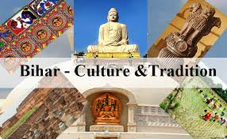
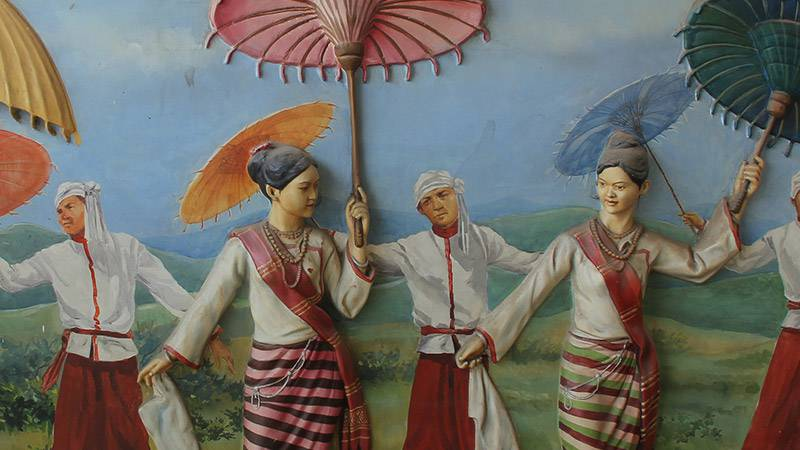
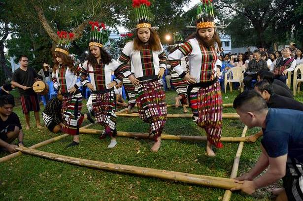

Bihar

Local Attire
Known as "Land Of Buddha", Bihar is the state of art and religion. Its culture is influenced by the pilgrimage places as well as different social groups that are present in the state. Even though the state accommodates all kinds of social and religious groups, the local attire is fairly simple. Dhoti-Kurtas are worn by the men of the state, whereas the women usually wear sarees. Some people also pair the famous Kurta with Pajamas.
Traditional Cuisine
Bihar has plenty of flavourful and piquant foods, the local foods consist of Litti Chokha, Sattu Paratha, Jhaal Moori, Khaaja, Tilkut etc. Litti Chokha is an iconic food of Bihar. The iconic Litti Chokha is a baked salted wheat-flour cake Filled with sattu and some special spices, which is served with baigan bharta, made of roasted eggplant and tomatoes. The cuisine of Bihar is largely similar to North indian and East Indian cuisines.
Art Forms
Bihar has a rich past, there were a lot of art enthusiasts who devoted their time in making and perfecting the art forms we know of now. Bihar has a range of unique art forms. Some of them are Madhubani Paintings, Rock Paintings, Textile Painting, Wooden Work, Wood Carvings, Pottery works, Bamboo works, Sikki Works, Zari works, Kasida work, Patna Kalam, Lacquer works. These forms of art works have been perfected by a number of great artists in the past. Madhubani Paintings are an art icon from Bihar.
Tripura

Local Attire
Tripuris have their own traditional dresses. This type of dress is similar to that of the rest of the North-East Indian people, but the pattern and design is totally different. The traditional dress for men in Tripura is Rikutu Gamchi. Its a towel which the men wrap around their waist and wear with a shirt. Women of the region, wear Ringai, which covers the lower part of the body and is worn with Risa, which covers the upper part of the body. Other Local attire include Kamchwlwi Borok, Duti Borok, Rignai Chamathwibar etc.
Traditional Cuisine
The Tripuris are essentially non-vegetarians and hence the main courses are mainly prepared using meat, but with the addition of vegetables. Traditional Tripuri cuisine is known as Mui Borok. Tripuri food has a key ingredient called Berma which is a small, oil-pasted and dry fermented fish. The foods are considered to be healthy as they are usually prepared mostly without oil. Other traditional foods include Chakhwi, Mwkhwi, Mwitru and Gundok. Traditional rices include Maisa, Maimi and Guriya.
Art Forms
Handlooms of Tripura reflect the inborn art of workmanship, and uniqueness of the people. Tripura has a large population of tribals, thus has a tradition of different kinds of crafts. Handloom is the prime craft of Tripura. Cane and bamboo works are the main form of art and craft industries. Ethnic groups in Tripura make wide variety of handicraft products using bamboo and cane. Some of the well known craft produce from the State include table mats, floor mats, wall panels, furniture of cane etc.
Mizoram

Local Attire
Men in Mizoram prefer a simple lifestyle and is apparent from their way of dressing up. The dress which is most commonly worn by men comprises of a cloth around 7 feet long and 5 feet wide. In addition to this, an extra piece of fabric is wrapped around the upper body during winter season paired up with a white-colored coat. The traditional attires worn by Mizoram women is the traditional dress called 'Puan'. Other dresses include Puanchel, Ngotekherh, Cyhna and Kawechei
Traditional Cuisine
The cuisine of Mizoram shares characteristics to other regions of Northeast India and North India. Rice is the staple food of Mizoram, while Mizos love to add non-vegetarian ingredients in every dish. Fish, chicken, pork and beef are popular meats among Mizos. Dishes are cooked in any available oil. Meals tend to be blander with less oil and more vegetables. Traditional cuisine include Misa, Mash, Poorah and Sawhchiar.
Art Forms
The popular art and crafts of Mizoram involves a significant sector of the industrial market of the state. The famous handicrafts of Mizoram are made with bamboo, textiles, cane works, and basketry. The womenfolk of this northeastern Indian state are associated with weaving. The bamboo and cane craft is one of the main traditional crafts in Mizoram, and the bamboo has been utilised in making a variety of items, from furniture to commercial items. Canes are also used in the preparation of hats baskets of various shapes and sizes.
ACKNOWLEDMENTS
I, Shresth Singh, X-E, would like to express my gratitude for my CA teacher, Ms. Arpita Upadhyay who gave me the golden opportunity to do this wonderful project on the topic Cultures of different States, which also helped me in doing a lot of research and I came to know about so many new things. I am thankful to my parents for always being there at my aid. I also take this opportunity to thank my friends for sharing their valuable ideas and time with me to help me complete this project within the limited time frame. I am really grateful to all of them. I had a fabulous time working on this project.